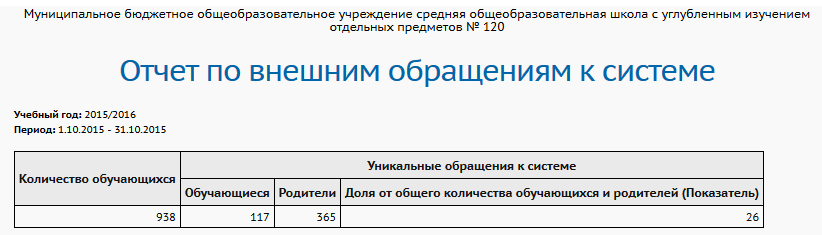

Данный отчёт выводит количество уникальных входов в систему только для учащихся и родителей (которые являются внешними пользователями системы).
Пример отчёта:

Графа "Количество обучающихся" выводит количество учеников в школе по состоянию на дату окончания выбранного периода.
Формула расчёта последней графы отчёта:
"Доля от общего количества обучающихся и родителей (Показатель)"= (Уникальных входов родителей + Уникальных входов учащихся) / (Кол-во обучащихся * 2) * 100 %
Более подробную статистику посещений системы могут получить пользователи с ролями Администратор системы и Завуч в специальном разделе "Статистика посещений".